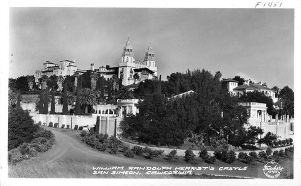

Hearst Castle Construction Camp
Worker Housing and Communal Facilities
(1919-1940s)
Tiger Bachmeier
A comprehensive examination of the living conditions and community structure during the construction of one of America's most ambitious building projects
1
Hearst Castle: An American Palace
Overview and Location
Hearst Castle, formally known as La Cuesta Encantada ("The Enchanted Hill"), stands as one of America's most opulent private estates. Built for newspaper enthusiast William Randolph Hearst between 1919 and 1947, this architectural marvel represents the pinnacle of American luxury and ambition during the early 20th century.
Location Details
The castle sits atop a 1,600-foot hill in San Simeon, California. Approximately halfway between Los Angeles and San Francisco along Pacific Coast. The estate overlooks the Pacific Ocean and encompasses 127 acres of gardens, terraces, pools, and walkways, the surrounding ranch property originally spanning over 250,000 acres.
Designed by California's first licensed female architect Julia Morgan, the estate features 165 rooms and 123 acres of gardens. It combines Mediterranean Revival, Spanish Colonial, and Gothic architectural styles. Today, it's a California State Park and attracts nearly one million visitors annually.
Sources: Hearst Castle Official Website; California State Parks
2
The Enchanted Hill

Main facade of Casa Grande

Aerial view of the coastline
The castle's dramatic hilltop location offers commanding views of the Pacific Ocean and surrounding landscape.
3
Construction Project Overview
Key Facts
- Construction spanned nearly 28 years (1919-1947)
- 100-150 workers lived on-site during peak construction
- Julia Morgan designed both the castle and workers' camp
- Provided crucial employment during Great Depression
The Hearst Castle construction project required an entire support infrastructure, a dedicated workers' camp that evolved into a mountaintop community.
Sources: Hearst Castle Official Website¹; SAH Archipedia²; Rost Architects¹⁶
4
Building the Dream
Construction crews at work on one of the castle's many structures, showcasing the massive scale of the project.
5
Architectural and Physical Aspects
6
Evolution of the Hilltop Community
From Canvas to Construction Camp
The workers' camp originated from Hearst's own discomfort with tent camping. As construction manager records reveal, Hearst told Morgan he was "getting too old" for sleeping under canvas on Camp Hill and that he needed "something a little more comfortable." This preference catalyzed the development of permanent structures for the castle and the builders.
Construction Management Evolution (1919-1940)
The camp transformed under three successive superintendents: Henry Washburn (1919-22) established initial facilities, Camille Rossi (1922-32) expanded barracks system, and George Loorz (1932-40) modernized the camp by standardizing electricity and plumbing throughout the workers' quarters. Almost 10 years without good plumbing. Each manager organized facilities, converting temporary tents to permanent wood-frame structures.
By the late 1920s, Morgan's design included dedicated staff areas within Casa Grande itself. The south service wing had a separate staff dining room and 9,000-square-foot basement with support facilities. This allowed female employees and senior servants to move from hilltop barracks into purpose-built interior rooms. Construction crews remained outside—showing practical needs and social hierarchies of the era.
Sources: Aidala architectural analysis; Loorz Papers via Coffman; Hearst Castle construction records
7
Design and Layout of the Barracks
During Hearst Castle's decades-long construction, a dedicated workers' camp grew on the hilltop to house the crews.
Julia Morgan's Design Approach
- Personally planned the workers' camp "down to the minutest detail"
- Numerous barracks and simple cabins along south side of hill
- Utilitarian dormitory structures for male workers
- Clustered conveniently near work site but ALSO out of view from Casa Grande
Contemporary aerial photos show a virtual village of "many informal barracks for hilltop construction workers" alongside support buildings.
Sources: Hearst Castle Official Website¹; SAH Archipedia²
8
Worker Housing and Camp Layout

Worker barracks on the hillside
Camp zoning and layout plan
The workers' camp was carefully planned to provide housing close to the construction site and remaining out of view from the main estate.
9
Construction and Materials
Building Approach
- Built quickly
- Simple wood-frame construction
- Basic finishes for temporary use
- Designed to withstand coastal weather
Infrastructure Development
- Water from distant springs pipeline instead of walking or wells
- Private wharf and light-duty railroad
- On-site brick and tile production
- Mission-style warehouses and workshops
Morgan leveraged her background to ensure temporary buildings withstood the windy mountaintop.
Sources: Airstream Travelers⁵; Hearst Castle Wikipedia³⁴; Hearst Ranch History⁶⁷
10
Building Infrastructure

Materials warehouse

Scaffolding systems
Extensive scaffolding and storage facilities were essential for the decades-long construction project.
11
Location and Site Planning
Strategic Placement on "Camp Hill"
The main workers' camp occupied a plateau on the south slope of "Camp Hill" - aptly named since Hearst's family originally camped there in tents.
Site Planning Considerations:
- Located just downhill from core construction zone
- Kept out of immediate view of Hearst's guests
- 5 miles up winding road made daily commuting impractical
- San Simeon population under 30 in 1919. Juxtaposition to a boom in population and guests being brought in
Morgan's plan turned the hilltop into a self-sufficient camp. It had temporary power lines, makeshift plumbing, and wind protection of 80-mph winds.
Sources: SAH Archipedia²¹¹; Hearst Castle Wikipedia⁹¹⁰; PBS¹¹
12
Morgan's Detailed Planning

Original construction plans

Detailed architectural drawings
Julia Morgan's meticulous planning extended to every aspect of the construction camp and support facilities.
13
Correspondence: Morgan and Hearst
Original correspondence between architect Julia Morgan and William Randolph Hearst, revealing their collaborative process and attention to detail.
14
Julia Morgan's Comprehensive Vision
Julia Morgan served as both architect and general contractor, directing every aspect of construction.
Design Scope
- Master planner of entire hilltop
- Designed workers' quarters alongside palaces
- Five Spanish/Mission style residences for employees
- Mission-style warehouse for art collection
Holistic Approach
- Everything from Casa Grande all the way to bunk beds
- Well-built and efficient facilities
- Improved daily life for crews
- 28 years of organized construction
Sources: Hearst Castle Official Website¹²; SAH Archipedia⁶; Bluffton University⁶
15
Social and Historical Aspects
16
Living Conditions and Community Structure
Life in the hilltop construction camp was rugged but came with basic comforts provided by Hearst.
Daily Life Details:
- Between 100-150 workers during peak construction. More likely 25-70 daily
- Mostly single men or men who left families elsewhere
- Group barracks with bunk beds and heating stoves
- Free housing and meals on the job
Gender Segregation
Male laborers in hillside camp; women staff initially in separate quarters, later in twelve bedrooms above castle kitchen (mid-1920s). This reflected social norms while creating unique mountaintop community.
Sources: SAH Archipedia¹³¹⁴; Rost Architects¹⁶; PBS¹⁰¹¹
17
Dining Facilities and Communal Resources
The Mess Hall
- Heart of camp social life
- Professional cooks--three meals daily
- Hearst dined with crew (1920-1924). 5 Years?
- Long tables
Other Amenities
- Bathhouses with showers
- Laundry facilities
- Recreation: cards, radio, films
- Shared facilities for men and women
Hearst would tell projectionist to replay Marion Davies' "Peg o' My Heart" repeatedly. Movie about Blue-Blood inheritance
Sources: PBS¹⁰¹¹; SAH Archipedia²; Hearst Castle Oral History¹⁵
18
Heart of the Community: The Mess Hall
The mess hall served as the social center of camp life, where workers gathered for three meals daily and evening recreation.
19
Worker Experiences During the Great Depression
Economic Lifeline for the Region
Much of the building took place in the 1930s when unemployment was high.
- Provided steady jobs for hundreds in San Luis Obispo County
- "Employed hundreds of local residents"
- "Provided a lifeline for the town's survival"
- Modest wages, with meals and housing covered
Despite Hearst's perfectionism requiring frequent changes, like the Neptune Pool salt water incident, he wanted salt and messed up pipes, workers remained loyal, aware they had landed rare steady employment during hard times.
Sources: Rost Architects¹⁶¹⁹; Hearst Castle Wikipedia¹⁶¹⁷
20
The Builders of the Dream
Dedicated construction crews worked tirelessly for decades, many staying for ten years or more during the Great Depression.
21
Oral Histories and Memoirs
Daily Routines Recalled
- 7AM whistle summoning to work
- Communal breakfasts, endless coffee
- Arduous climbs up scaffolding
- Evening baseball games, Carpernters vs Plumbers
Memorable Stories
- "Put on Marion's Peg o' My Heart"
- Eight men to a barracks room
- Newspaper clippings on walls, pages from Hearst's own papers
- Christmas parties for workers' children, who got to ride the bus to the top of the hill and pick from the tree
Workers admired "Miss Morgan" for her tireless work ethic - arriving at 2 AM, jumping on scaffolds by morning, inspecting every detail including living quarters.
The Churrigueresque, New Spain architectural style focused ornament on doorways, windows, and towers, requiring workers to spend months carving stone and installing tile. The camp mess hall schedule often shifted to night shifts so crews could complete these heavily decorated doors without interrupting daytime guest traffic.
Sources: Hearst Castle Oral History¹⁵; PBS¹⁶²; Wikipedia¹⁸
22
Creating a Place of Splendor
Workers carefully installed priceless art and architectural elements, transforming Hearst's vision into reality.
23
Legacy of the Construction Camp
End of an Era (1947)
When William Randolph Hearst left San Simeon in 1947 and construction finally ceased, the era of the worker camp ended.
Lasting Impact:
- Created unique mountaintop community: 28 years
- Made brotherhood through shared hardship
- Provided Depression economic stability
- Left rich oral histories documenting American labor
The legacy of that unique community endures tales of an "enchanted hill" graced by art and architecture. But built by the hard work of hundreds who forged a lively and old home in its shadow.
Sources: SAH Archipedia¹⁶²; Rost Architects¹⁶; Hearst Castle Official Website
24
Complete References
1. Hearst Castle Official Website – Julia Morgan Profile. https://hearstcastle.org/history-behind-hearst-castle/historic-people/profiles/julia-morgan/
2. SAH Archipedia – Hearst Castle Entry. https://sah-archipedia.org/buildings/CA-01-079-0050
4. Hearst Castle - Wikipedia. https://en.wikipedia.org/wiki/Hearst_Castle
5. Airstream Travelers – "San Simeon—One Man's Castle" (2019). https://airstreamtravelers.wordpress.com/2019/05/09/san-simeon-one-mans-castle/
6. Bluffton University – Introduction to Images of the Hearst Castle by Julia Morgan. https://homepages.bluffton.edu/~sullivanm/jmhearstss/intro.html
7. Hearst Ranch History – "Piedra Blanca: The San Simeon Ranch". https://www.hearstranch.com/about/piedra-blanca-the-san-simeon-ranch/
8. Hearst Castle - Wikipedia [Construction Infrastructure sections]
10. William Randolph Hearst's Castle at San Simeon | American Experience | PBS. https://www.pbs.org/wgbh/americanexperience/features/citizen-hearst-castle-san-simeon/
11. SAH Archipedia [Community Life sections]
13. Hearst Castle - Wikipedia [Transportation and Logistics sections]
15. Hearst Castle Oral History Project (1986) via Wikipedia
16. Rost Architects – "A Brief History of the Hearst Castle and Architect Julia Morgan" (December 2022). https://www.rostarchitects.com/articles/2022/12/8/hearst-castle
17. Hearst Castle Oral History [Neptune Pool saltwater anecdote]
19. Rost Architects [Great Depression employment data]
26